1) Problem Formulation
A method is required to filter out noise in textured images
Contents
2) Proposed Solution
The proposed algorithm calculates 6 Zernkie moments of different orders for of each pixel in the image. It uses these values to apply a non-local means filter on the image. For each pixel in the image, the zernkie values are used to calculate a weight for the similarity between a pixel and every other pixel in a local search region.
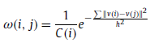
Each weight value is normalized by the sum of all weights for the pixels in a region:
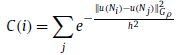
The filtered pixel value is given by:
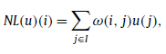
where u(i) is a unfiltered pixel value, NL(u) is the filtered pixel value Zernike moments are calculated with the following equations:
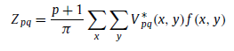
This is filter evaluated on a circular region of pixels with radius r, and x, y are given by x = dx / r, y = dy / r, where dx and dy are the distance in pixels of each pixel to the center of the region. This is done so that the values of x and y are within the unit circle:
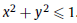
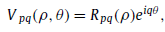
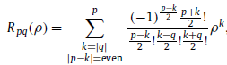
3) Data Sources
The test image used was Lena. The image is then corrupted with WGN noise with variance between 5, and 100.
clc; close all; original = imread('lena_256x256.ppm'); original = original(:,:,1);
4) Solution
% Add white gaussian noise sigma = [5, 10, 20, 30, 50, 75, 100] / 100; p = [0, 1, 2, 2, 3, 3]; q = [0, 1, 0, 2, 1, 3]; noisy_image = imnoise(original, 'gaussian', 0, 0.005); % Compute the various Zernike moments and use them to denoise the image tic; [newImage, moments] = Zernike_moment(noisy_image, p, q); timeTaken = toc; % Calculate the psnr of the noisy image compared to the filtered image noisy_image_psnr = psnr(noisy_image, original); filtered_image_psnr = psnr(newImage, original);
5) Visualization
figure() imshow(original) title('Original') figure() imshow(noisy_image) title('Noisy Image') displayZernikeMoments(moments, p, q); figure() imshow(newImage); title('Image after Zernike Moment Filtering Applied');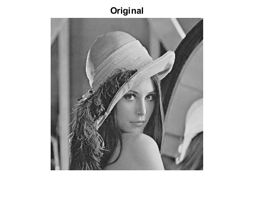 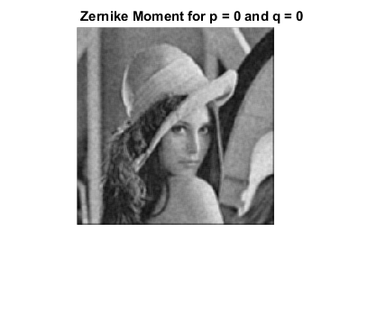 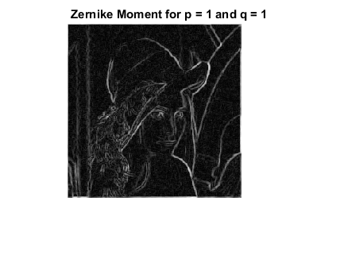 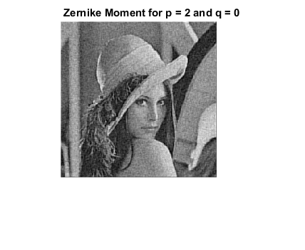 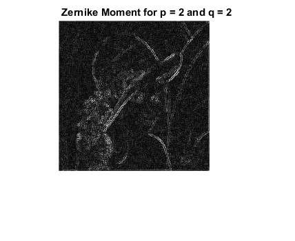 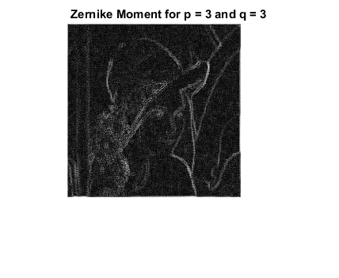
6) Analysis and conclusions
We were able to reproduce the filtering effects on the image Lena.jpg. The paper reported a PSNR of 32.29 for their method w, when applied on a noisy image with PSNR of 22.16.
noisy_image_psnr filtered_image_psnr % The algorithm is fairly predictable in terms of how the zernike moments % of different images appear. As well, the algorithm is entirely % deterministic. % The major drawback of this algorithm is the slow performance. For a % 256x256 image, the algorithm took the following length of time to % complete: timeTaken
noisy_image_psnr = 23.0234 filtered_image_psnr = 25.8005 timeTaken = 2.6979e-05